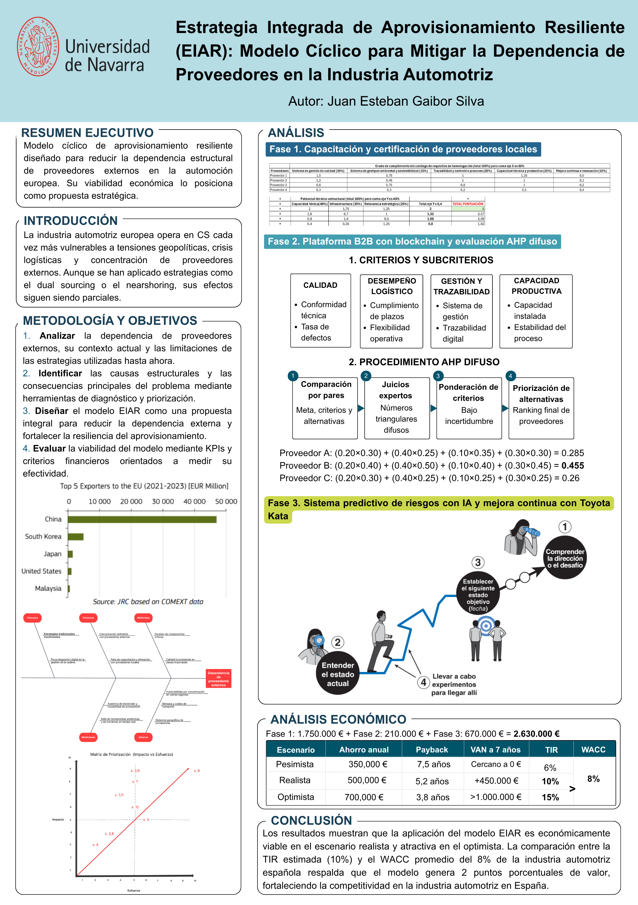

Hi, I'm Juanes
Business Administration Student at University of Navarra | Diploma in Strategy | Experience in Financial Analysis & Performance Marketing

Business Administration Student at University of Navarra | Diploma in Strategy | Experience in Financial Analysis & Performance Marketing
🎓Passionate about deciphering business dynamics, I focus on bridging the gap between theoretical knowledge and high impact digital growth and financial analysis projects. I have a proven track record of boosting visibility and engagement through data-driven decision-making, while identifying critical liquidity, leverage, and profitability risks in real world business environments. I am now looking to advance my career in roles that integrate strategic thinking, quantitative analysis, and impact-oriented execution.
My initiative has led me to participate in various ventures, most recently Nutrition4All and "My Digital Footprint: The shots_byjuanes Project." I am constantly seeking new opportunities to learn and grow at the intersection of business and technology. Additionally, I am passionate about photography, a pursuit that began as a hobby and that I am now integrating into my professional life to add creative value.
Through my project shots_byjuanes, I capture landscapes and candid moments using my Fujifilm Finepix S. This passion for detail and finding value in the everyday defines my visual approach the same sharpness I apply as a Digital Marketing Coordinator, turning strategic observation into professional results.
I publish most of my photos in carousel format on the project's Instagram account. I divide the photos by location and color. I also leverage Lightroom to enhance every shot and maximize its impact.
Democratizing Nutritional Health through Digital Innovation. Nutrition4All was born as a disruptive response to a silent public health crisis in Spain: the lack of access to professional and truthful nutritional guidance. With more than half of the adult population facing overweight or obesity issues, the market is currently saturated with "miracle diets" and free misinformation.
Our value proposition is "Science and support in your pocket." Unlike automated apps driven by generic algorithms, we champion real human connection, providing access to a registered dietitian through our dedicated Web-App. The subscription integrates three fundamental pillars: professional consultations, a micro-learning ecosystem, and continuous follow-up.
A resilient, closed-loop procurement model designed to reduce structural dependence on external suppliers within the European automotive industry.
The framework integrates local supplier development, blockchain-based traceability, multi-criteria selection, and predictive monitoring. Its economic viability positions it as a high-impact strategic proposal.
